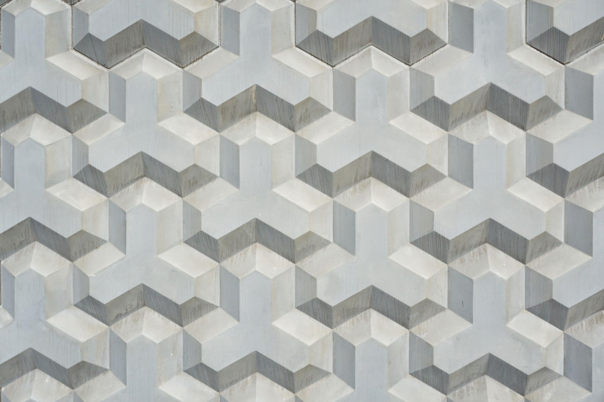

3D-Printed Homes
Robotic printers extruding concrete walls layer by layer — the fastest-moving frontier in construction, with $140M+ invested in two years. What it costs, and whether it's real yet.

A gantry or robotic-arm printer extrudes a specialized concrete mix in layers, building walls directly from a digital model — no forms, minimal waste, and a shell that can go up in days. It's the most-hyped method in construction, and in 2026 it's crossing from demo to real, with over $140M invested in the space in two years.
How it works
A large printer follows a 3D file, laying down beads of fast-setting concrete/mortar to form the wall structure. Rebar, insulation, roof, windows, plumbing, and electrical are added conventionally. Material innovation is expanding fast — biopolymers, recycled aggregates, and even printed adobe (ancient earth + robotics) are being trialed.
What does it cost?
Be careful with headline numbers: printing produces the shell, not a finished home. The printed structure can be 30–50% cheaper and far faster than block-laying, but MEP, roof, and finishes are the same as any build. There are still very few printers operating in Central America, so availability — not cost — is the real 2026 constraint. (Costs are early and highly project-dependent.)
The trade-offs at a glance
| Factor | Rating | Notes |
|---|---|---|
| Cost | 🟢 | Shell can be much cheaper; finishes normal |
| Build speed | 🟢 | Walls in days, low labor |
| Waste/sustainability | 🟢 | Minimal waste, local materials possible |
| DIY-friendly | 🔴 | Needs an industrial printer + crew |
| Heat/climate fit | 🟢 | Concrete-based; like the regional norm |
| Moisture/termite | 🟢 | Concrete resists both |
| Seismic/wind | 🟢 | Strong when properly reinforced |
| Availability in region | 🔴 | Very few printers in Central America yet |
| Permitting/finance | 🟡 | Codes catching up; concrete helps |
Can you build this in Panama or Costa Rica?
In principle, beautifully — it's concrete, which is exactly what the tropics already build with, so it inherits concrete's strengths (heat, storm, termite, seismic performance). The blocker today is simply access to a printer and a trained crew in-region. As the technology spreads south, 3D-printed concrete is one of the most natural fits for a market like Panama — and a logical extension of a concrete builder's toolkit.
Thinking about building in Panama or Costa Rica?
SORA is a fixed-price design-build platform for foreign buyers. We build in reinforced concrete by default — and we can talk you through when an alternative method actually makes sense for the tropics. Play with cost live in the 3D configurator.
See real 2026 build costs →Frequently asked questions
How much does a 3D-printed house cost?
The printed shell can run 30–50% less than conventional block walls and go up in days, but that's just the structure — roof, windows, plumbing, electrical, and finishes cost the same as any home. Early projects vary widely, and in Central America availability of a printer matters more than price right now.
Are 3D-printed homes strong and safe?
Yes, when properly reinforced. They're concrete-based, so with correct rebar and engineering they perform well against wind, seismic activity, fire, and pests — similar to conventional reinforced concrete.
Can I get a 3D-printed home in Panama or Costa Rica?
Not easily yet — there are very few construction printers operating in Central America as of 2026. The method fits the region's concrete-first building culture, so expect availability to grow, but today it's still frontier.
Sources & verification
Figures in this guide were checked against primary and authoritative sources on 27 July 2026. Immigration, tax, and cost figures change — always confirm the current rules with the official body or a licensed professional before acting.
- CleanTech Group — 3D-printed homes on the rise, investment data
- Style3D — are 3D printed houses the future